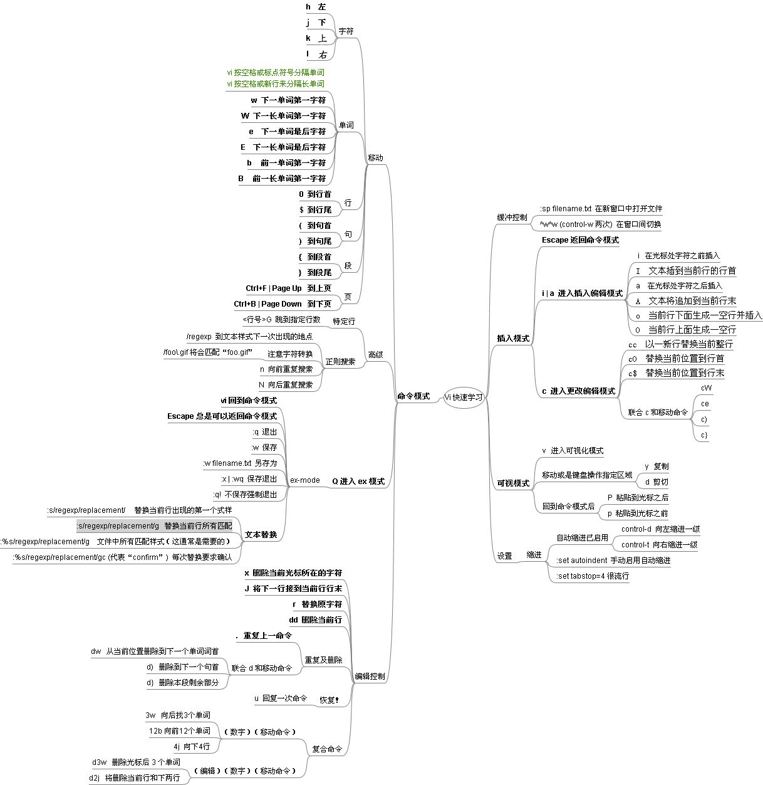

★命令模式
移动光标
- h 或 向左方向键(←) → 光标向左移动一个字元
- j 或 向下方向鍵(↓) → 光标向下移动一个字元
- k 或 向上方向鍵(↑) → 光标向上移动一个字元
- l 或 向右方向鍵(→) → 光标向右移动一个字元
- [Ctrl] + [f] → 屏幕『向下』移动一页，相当于 [Page Down]按键
- [Ctrl] + [ b ] → 屏幕『向上』移动一页，相当于 [Page Up] 按键
- n → n 表示『数字』。按下数字后再按空白鍵，光标会向右移动这一行的 n 个字元
- 0 → 数字『 0 』：移动到这一行的最前面字元处
- $ → 移动到这一行的最后面字元处
- G → 移动到这个文件的最后一行
- nG → n 为数字。移动到这个文件的第 n 行(可配合 :set nu)
- gg → 移动到这个文件的第一行，相当于 1G
- n → n 为数字。光标向下移动 n 行
查找与替换
- /word → 向光标之下查找一个名称为 word 的字符串。如想查找 eric4ever 字符串，输入 /eric4ever 即可
- ?word → 向光标之上查找一个名称为 word 的字符串
- n → 『重复前一个查找的动作』
- N → 与 n 刚好相反，为『反向』进行前一个查找动作
- :n1,n2s/word1/word2/g → n1 与 n2 均为数字。在第 n1 与 n2 行之间查找 word1 字符串，并将该字符串替换为 word2。如：在 1 到 9 行之间查找 eric4ever 并替换为 ERIC4EVER 则：『:1,9s/eric4ever/ERIC4EVER/g』
- :1,$s/word1/word2/g → 从第一行到最后一行查找 word1 字符串，并将该字符串替换为 word2
- :1,$s/word1/word2/gc → 从第一行到最后一行查找 word1 字符串，并将该字符窗替换为 word2，替换前显示提示对话框是否确认替换
删除、复制与粘贴
- x, X → 在一行字当中，x 为向后刪除一个字元 (相当于 [del] 按键)， X 为向前刪除一个字元(相当于 [backspace] 按键)
- dd → 刪除光标所在的那一整列
- ndd → n 为数字。刪除光标所在的向下 n 列
- yy → 复制光标所在的那一行
- nyy → n 为数字。复制光标所在的向下 n 列
- p, P → p 为将已复制的内容粘贴在光标下一行上，P 则为粘贴在光标的上一行
- u → 还原前一个动作
- [Ctrl]+r → 重做上一个动作
- . → 小数点，意思是重复前一个动作
★编辑模式
- i, I → 插入：在目前的光标所在处插入输入的文字，已存在的文字会向后退； 其中， i 为『从目前光标所在处插入』， I 为『在目前所在行的第一個非空白字元处开始插入』
- a, A → a 为『从目前光标所在的下一个字元处开始插入』， A 为『从光标所在行的最后一个字元处开始插入』
- o, O → o 为『在目前光标所在的下一行处插入新的一行』， O 为『在目前光标所在处的上一行插入新的一行』
- r, R → r 为『取代光标所在的那一个字元』， R 为『一直取代光标所在的文字，直到按下 ESC 为止』
- Esc → 退出编辑模式，回到一般模式中
★末行指令模式
- :w → 将编辑的文件写入到硬盘上
- :q → 退出 vi
- :wq → 保存后退出，若为 :wq! 则为强制保存为退出
- :set nu → 显示行号
- :set nonu → 取消显示行号

1、正则表达式查找
http://freetravel.blog.sohu.com/106769983.html
- 1) 继续查找。n, 3n, N
- 2) 向上搜索。?
- 3) \c 忽略大小写，而\C对大小写敏感。
- 4) 查找当前词。 * 向下， # 向上
- 5) 特殊字符。 .*[]^%/?~$ 加反斜杠 \。而\e表示；\t表示；\r表示- ；\b表示。
- 6) 匹配换行或空格。\n 换行；\s 空白，注意是空白不是空格。_s 匹配换行或者空- 格；_a表示匹配换行或者一个字母。
- 7) 限定词首或者词尾。\< 以指定字符串开始的单词<， > 以指定字符串结尾的单词
- 8) 行首和行尾。输入/^string 查找以string开始的行，输入/string$则查找以string- 结束的行。这个模式不会忽略前导或者后置的空格。
- 9) 可重复的字符。重复多次或者0次，如： /be 或 (be)*。+ 重复至少一次到无数- 次。 \= 重复0次或者一次。{n,m} 重复n到m次。
- 10) 匹配列表中的一个。\| 分割的列表。如：/one\|two\|three， /end(if\|- while\|for)将会查找endif，endwhile以及endfor。
- 11) 特殊的字符集合。 \d 代替[0-9]； \D 代替非数字[^0-9]；\s表示空白字符代替[ - ] ( 和)；\S表示非空白字符代替[^ ]；\l表示小写字母代替[a-z]；\L表- 示非小写字母代替[^a-z]；\u表示大写字母代替[A-Z]；\U表示非大写字母代替[^A-Z]。
- 12) 搜索并替换。简单形式是 :s/from/to/； :%s/from/to/就是在全文查找from并替- 换为to；:1,50s/from/to/表示在第1行和第50行之间（包括1和50行）进行搜索和替换。
- 13) 替换的确认方式。默认是无须确认；g表示直接替换无须进行确认；c表示在进行替换- 前需要用户进行确认。
- 这时你可以选择(y/n/a/q/1/^E/^Y）:y表示同意当前替换；n表示不同意当前替换；a表示- 替换当前和后面的并且不再确认；q表示立即结束替换操作；1表示把当前的替换后结束替换- 操作；^E向上滚屏^Y向下滚屏，用来帮助查看前后内容以决定进行操作。
- 14) 查找历史。 上下键
2、按目录查找字符串
使用 vimgrep
http://www.nerdlinux.com/post/43/
http://blog.csdn.net/unbutun/article/details/6591257
http://blog.csdn.net/qilihechuncai/article/details/8587389
3、查看/转换文件编码
http://blog.csdn.net/dengxu11/article/details/6763765
:set fenc=gbk 然后保存文件即可转换编码
http://sosowo.org/archives/60
4、列模式
c+q 进入列模式
http://blog.csdn.net/hywhy/article/details/5862456
5、文件比较
http://bbs.ednchina.com/BLOG_ARTICLE_222557.HTM
6、多Tab
:tabnew
7、outline
ctags+taglist
8、FileExplorer
http://www.cnblogs.com/ifys/archive/2010/10/24/1860610.html 前面四部分。
ctags+taglist+bufexplorer+winmanager
NERDTree